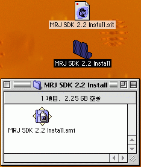
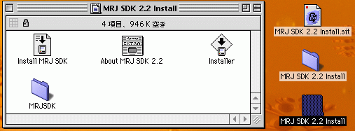
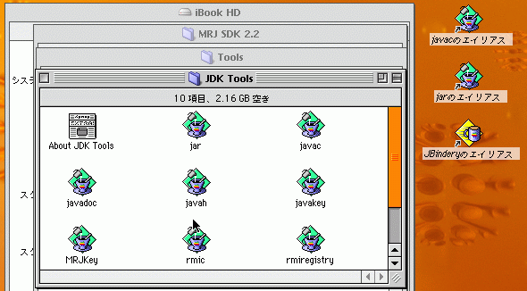
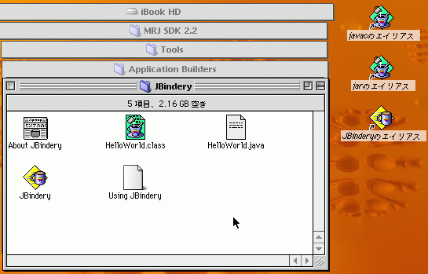
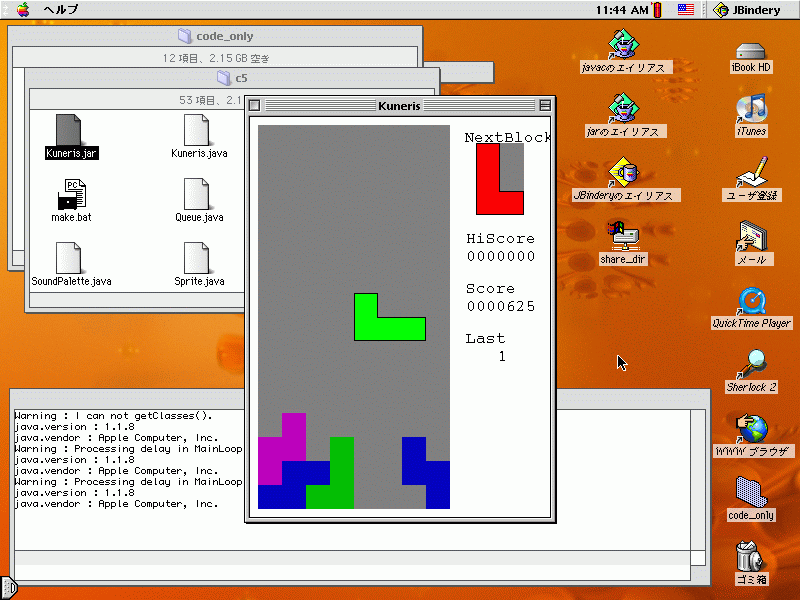

MacOS9へのSDKのインストール
みなさんが普段利用している「パーソナルコンピュータ」には、さまざまなOSが使われています。95%という圧倒的なシェアを持つWindowsが、その代表ですが、次に利用者が多いのがMacOSです。MacOSの最新版は「MacOSX」（Xは10の意）ですが、本稿執筆時点で、まだ利用者の半数は、1つ古い版であるMacOS9を使っていると言われています。ここでは、Macの半数のシェアを持つにも関わらず、陽が当たらなくなったMacOS9上で、Javaプログラミングする方法を紹介します。（未確認ですが、ここで紹介する方法は、MacOS8にも当てはまるようです）
MacOS9上でJavaプログラミングを行うには、Javaの実行環境である「MRJ（Macintosh Runtime for Java）」と、開発環境である「MRJ SDK」を用意する必要があります。MRJの最新版は2.2.6、MRJ SDK の最新版は2.2です。Appleのwebサイトからそれぞれをダウンロードし、インストールします。
まず、MRJ2.2.6ですが、こちらはソフトウェアアップデートのページからダウンロードすることができます。ソフトウェアアップデートには、さまざまなアップデートが用意されていますので、OS本体なども、最新版にしておきましょう。
次にMRJ SDK 2,2ですが、こちらはAppleDeveloperConnection内にある古いMacOSにおけるJavaについてのページから、ダウンロードページにたどり着けます。ここから MRJ SDK 2.2 をダウンロードして下さい。


Installerをダブルクリックすると、SDKがインストールされます。
インストール時に、特に設定を変えなければ、ハードディスク内にフォルダ「MRJ SDK 2.2」が出来ているでしょう。この中に、さまざまなツールが用意されています。
開発になくてはならないコンパイラjavacなどは、[MRJ SDK 2.2]-[Tools]-[JDK Tools]フォルダ内にあります。必要なツールのエイリアスを、デスクトップに作っておくと便利でしょう。
MacOS9には、コマンドラインから入力を行う仕組みがありません。このjavacを使うためには、Javaのソースファイルを、javacのエイリアスに、ドラッグ＆ドロップするなどします。
また、本CD-ROM内のソースをコンパイルする際には、SoundPalette.javaなどで、Java1.1にはないクラスを利用していますので、本文を参考に、ソースを手直ししてコンパイルする必要があります。
MacOS9で最も利用されているwebブラウザは InternetExplorer5.1 です。このブラウザは、MRJを使ってアプレットを実行できます。では、アプレットではないアプリケーションは、どうすれば実行できるのでしょう?
MacOS9上で、Javaのアプリケーションを実行するには、「JBindery」を使います。このツールは、[MRJ SDK 2.2]-[Tools]-[Application Builders]-[JBindery]フォルダ内にあります。デスクトップにエイリアスを作っておくとよいでしょう。
JBinderyに、実行可能な jarファイルや classファイルをドラッグ＆ドロップすると、JBinderyのダイアログが開きます。ここで[Run]を押すと、プログラムが実行できます。
また、[Save Settings]を押すと、そのプログラムを起動するファイルを作ることができ、そのファイルをダブルクリックするだけで起動が可能になります。
あと1つ必要なのが、Javaに関するマニュアルです。本稿執筆時点での最新版日本語ドキュメントは
http://java.sun.com/j2se/1.4.2/ja/download.html
からダウンロードできます。日本語版ドキュメントのインストール手順を参考に、自分の使い易い場所に置いて下さい。
日本語版ドキュメントには、クラスライブラリの詳細なマニュアルや、jar、javadoc、appletviewerなど開発に欠かせないツールの使い方などが載っています。Javaを使う上で疑問があったら、まず、これを見てみましょう。